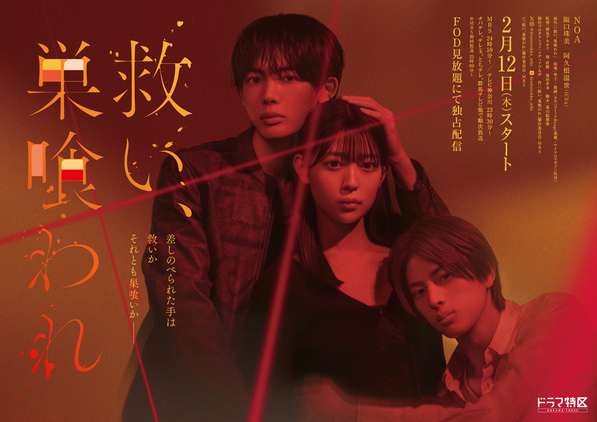

Sukui, sukuware (2026)
救い、巣喰われ

Seorang idol, Minase Ama, yang terus melakukan aktivitasnya sambil menanggung perlakuan buruk di sekitarnya, secara tak terduga diberi kesempatan untuk menjadi pemeran pengganti dalam sebuah drama yang dibintangi aktor Hosho Chiaki, yang ia temui secara kebetulan. Setelah itu temannya menantangnya bertaruh apakah ia bisa menaklukan Ama. Chiaki mendekatinya hanya untuk main-main, tetapi ia secara perlahan mulai tertarik pada kepolosan Ama, dan akhirnya perasaannya melampaui batas antara cinta dan obsesi.